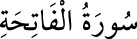

1- FÂTİHA
SÛRESİ
Müddessir sûresinden sonra Mekke’de inmiştir. 7 âyettir. Kur’an’ın ilk sûresi
olduğu için açış yapan, açan mânâsına “Fâtiha” denilmiştir.
Ana kitap mânâsına “Ümmü’l-kitâb”, dînin asıllarını ihtiva eden mânâsına “el-
Esâs”, ana hatlarıyla İslâm’ı anlattığı için “el-Vâfiye” ve “el-Kâfiye”, ilk defa inen
yedi âyet mânâsına “es-Seb’u’l-Mesânî”, birçok esrarı taşıdığı için “el-Kenz” adları
da verilmiştir.